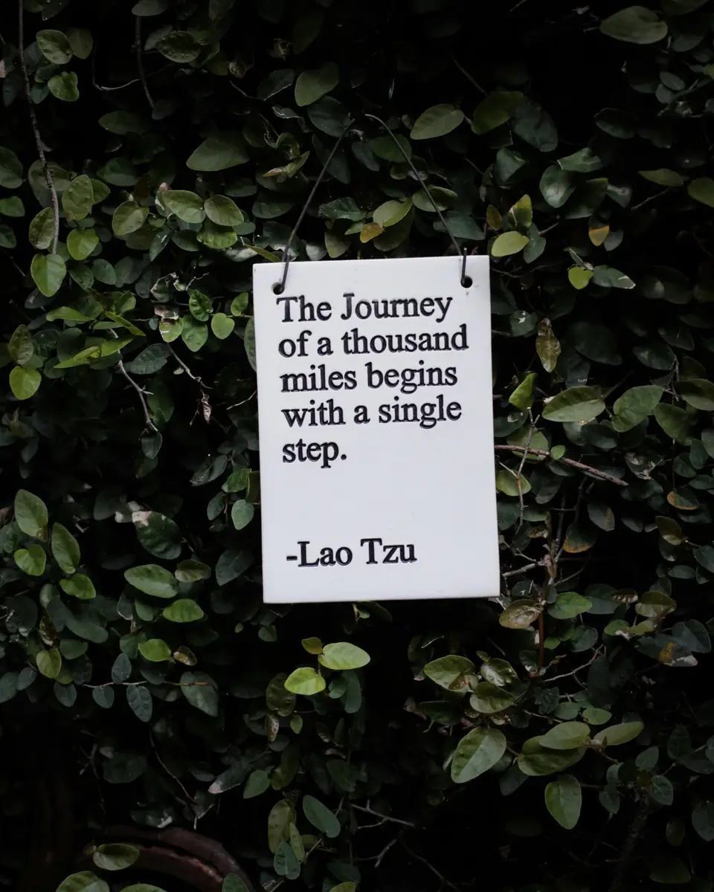
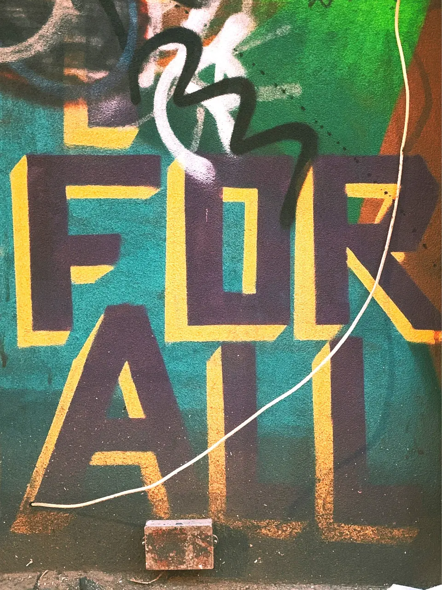
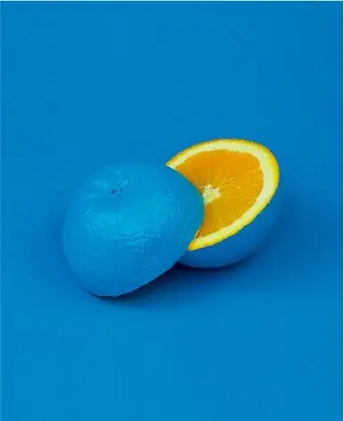

The Journal.
Positive psychology, leadership and workplace culture insight from Vanessa and the High Fifteen team. Honest, practical and written for leaders who are busy.

How much of yourself do you bring to work every day?
We talk a lot about skills, motivation, accountability and productivity. Yet there is another question leaders and managers need to ask: how much of your authentic self do you feel able to bring to work every day?
Read the article
You made a mistake at work. Now what?
At some point in your career, you are going to get something wrong. Welcome to being human. The question is not whether you will make mistakes. It’s what happens next.

Your reputation is being built in the tiny moments
By the time you get to the big moment, people already have a view of you, shaped by hundreds of tiny interactions you barely noticed.

Stop assuming people know what you want from your career
You might know exactly what you want next, or still be figuring it out. The problem starts when you assume everyone else somehow knows. Because they don’t.

Your career is not something that simply happens to you
There is a lot of pressure early in your career to have everything figured out. The truth is, most careers are not that neat.
Leaders, let’s reframe: delegating isn’t weakness. It’s strategic wisdom.
Delegation isn’t task distribution. It’s people development. Leaders aren’t meant to do it all. They are meant to build environments where others get to rise.

How to have courageous conversations about race and ethnicity at work
Talking about race and ethnicity at work can feel uncomfortable. Many people worry about saying the wrong thing. Here’s how to lean in anyway.
What is great management, and how to reset your relationship with your line reports
Management isn’t about control. It’s about care, clarity and development. The best managers develop people who can thrive well beyond them.

‘You are not the product of your circumstances’: thoughts on personal agency
In moments of uncertainty it’s easy to believe the world dictates our outcomes. Our circumstances do not define us fully. Our choices do.

Thriving, surviving, suffering: the one question to reset your workday
One of the most powerful questions I ask clients right now: do you feel you are thriving, surviving or suffering in your job?
The power of pause: why resilient leaders make the biggest impact
Leaders are expected to move faster, think bigger and deliver more. The ones with the biggest impact know when to pause.

Leading for inclusive high performance in 2025 and beyond
The world of work has changed, and so has the definition of a great leader.

Humility at work: the quiet power that can drive cultural change
Humility is not about shrinking our ideas or ourselves. It’s a deliberate practice that signals you are ready to learn, collaborate and lead without ego blocking progress.
Composure: the quiet strength behind resilience
Resilience is praised as the skill that helps us rise. But what gives resilience its strength?
Bouncing forward: why resilience is a daily decision
Resilience isn’t about soldiering on or bouncing back to what was. It’s about bouncing forward: resetting, learning, growing and trying again.

5 everyday managerial habits that can make the workplace more inclusive
Inclusion isn’t just about what you say. It’s about what you intentionally do, every day.

Conscious inclusion: why good intentions aren’t enough
People often enter their work with strong values and a desire to do good. Is that enough?

What happens to performance when we are in survival mode?
Why do leaders need more than hustle to truly thrive and perform at their best?
The future of work is human: leading with compassion, creativity and courage
The old blueprint of leadership, built on control, competition and compliance, is being thrown in the bin.
Leadership that resonates: bridging the gap between intention and impact
Three ways to bridge the gap between what you mean as a leader and how it actually lands.